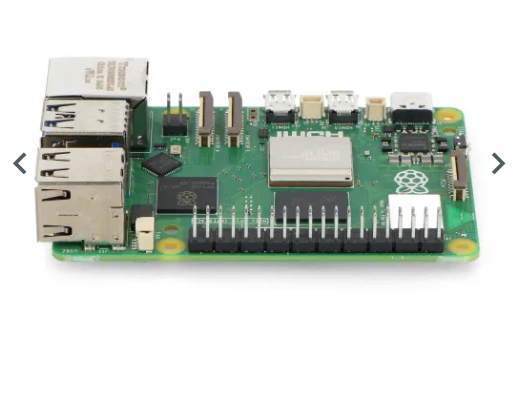
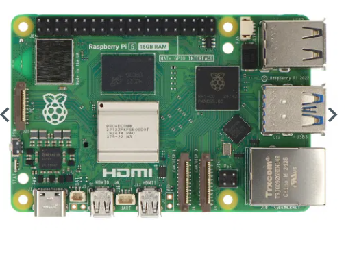
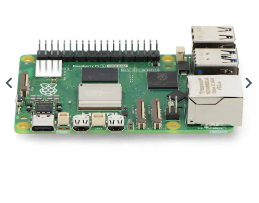

Franz Richter Organization builds systems at the intersection of hardware and software. From embedded architecture to full-stack platforms, every layer is designed with precision, performance, and intent. We focus on building reliable, efficient systems from the ground up.
Explore SystemsBuilding complete software systems from backend to frontend, with a focus on performance, scalability, and maintainability. Every component is designed to work together as a cohesive whole, not assembled from disconnected parts.
Designing low-level systems that interact directly with hardware, prioritizing efficiency and reliability. We write the firmware and drivers that make hardware respond exactly as intended, with no wasted cycles and no abstraction overhead where it matters.
Creating intelligent systems and automation tools that integrate into real-world workflows and improve operational efficiency. We build systems that make decisions based on real data, with well-defined behavior and observable outputs.

01
AutomotiveA multi-protocol automotive gateway built around the STM32H7, bridging CAN FD, LIN, and Ethernet buses. Developed firmware in bare-metal C with FreeRTOS scheduling, achieving sub-100µs latency across all protocol bridges while meeting ISO 26262 ASIL-B requirements.

02
Industrial IoTA low-power wireless sensor platform built on the Nordic nRF9160 for LTE-M connectivity and integrated GPS tracking. Designed for a 3-year battery life on a single cell in hostile industrial environments. The full software stack — from Zephyr RTOS to cloud ingestion — was built in-house.

03
Edge ComputingA custom system-on-module with a dedicated NPU for on-device machine learning inference. Designed to process MIPI camera input and run TensorFlow Lite models under a strict 2W power budget. Custom BSP, camera ISP tuning, and inference runtime were all developed internally.
01
We don't start with a framework and work backward. Every system is designed from its fundamental requirements, which means no inherited complexity and no unnecessary dependencies. We understand every component we ship.
02
Performance is not an optimization pass at the end. It is a design constraint from the start. We consider compute budgets, memory layouts, and latency requirements before the first line of code is written.
03
Smaller systems are easier to reason about, test, and maintain. We resist the impulse to add abstraction where directness will do, and we prefer systems that do one thing correctly over systems that attempt everything adequately.
Franz Richter Organization was founded by Tawhid Kabir, in collaboration with Lam Richter — a systems engineering company with deep roots in hardware design and embedded development. Together, they built an organization focused on delivering complete, end-to-end technical solutions.
Rather than relying on prebuilt solutions, the team approaches each project from first principles — designing and implementing systems that are tailored, efficient, and deeply integrated.
Tawhid Kabir
Director of Software DevelopmentLam Richter
Partner CompanyWhether you have a hardware project, a systems integration challenge, or a full-stack build that needs real engineering depth — we want to hear about it.